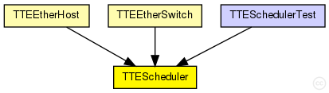
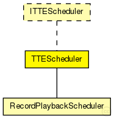

This documentation is released under the Creative Commons license
This documentation is released under the Creative Commons licenseTTEthernet scheduler module. The module allows to register Events using the registerEvent(SchedulerEvent) method. Allowed Events are:
The Scheduler can be asked for the current time with the getTicks() method. The cycle is configured by the parameters tick and cycle_ticks.
See also: SchedulerTimerEvent, SchedulerActionTimeEvent, SchedulerTimerEvent
Author: Till Steinbach
The following diagram shows usage relationships between types. Unresolved types are missing from the diagram. Click here to see the full picture.
The following diagram shows inheritance relationships for this type. Unresolved types are missing from the diagram. Click here to see the full picture.
| Name | Type | Description |
|---|---|---|
| RecordPlaybackScheduler | simple module |
Extended Scheduler module. The module allows to record the oscillator behaviour when the read variable is set to true. The same behaviour can then be replayed when setting write to true. This can speed up the simulation significantly as the it makes it unnecessary to simulate complex modules such as synchronisation or oscillator behaviour more than once. |
| Name | Type | Description |
|---|---|---|
| TTESchedulerTest | network | (no description) |
| Name | Type | Default value | Description |
|---|---|---|---|
| tick | double | 80ns |
Length of a tick |
| max_drift | double | 16ps |
Maximum clock drift (e.g 16ps for 200ppm at 80ns per tick) |
| drift_change | double | uniform(-1ps,1ps) |
Clock drift change for the next cycle, you are free to use your desired distribution |
| current_tick | double | tick |
Current length of a tick (with imprecission) |
| cycle_ticks | int | 37500tick |
Number of ticks for one cycle |
| Name | Value | Description |
|---|---|---|
| display | i=block/cogwheel |
| Name | Title | Source | Record | Unit | Interpolation Mode |
|---|---|---|---|---|---|
| newCycle | Start of cycle | count, vector | |||
| currentDrift | Current drift | vector | s |
// // TTEthernet scheduler module. The module allows to register Events using the // registerEvent(SchedulerEvent) method. Allowed Events are: // - SchedulerActionTimeEvent: Event that is triggered at a specified time in the cycle // - SchedulerTimerEvent: Event that is triggered after a specified time // // The Scheduler can be asked for the current time with the getTicks() method. // The cycle is configured by the parameters tick and cycle_ticks. // // @see SchedulerTimerEvent, SchedulerActionTimeEvent, SchedulerTimerEvent // // @author Till Steinbach simple TTEScheduler like ITTEScheduler { parameters: @display("i=block/cogwheel"); //Statistic of the current drift (Difference of configured and actual tick length) @statistic[currentDrift](title="Current drift"; unit=s; record=vector); //Statistic of the beginning of a new cycle @statistic[newCycle](title="Start of cycle"; record=count,vector); // Length of a tick double tick @unit(s) = default(80ns); // Maximum clock drift (e.g 16ps for 200ppm at 80ns per tick) double max_drift @unit(s) = default(16ps); // Clock drift change for the next cycle, you are free to use your desired distribution volatile double drift_change @unit(s) = default(uniform(-1ps,1ps)); // Current length of a tick (with imprecission) volatile double current_tick @unit(s) = tick; // Number of ticks for one cycle int cycle_ticks @unit(tick) = default(37500tick); }
This documentation is released under the Creative Commons license